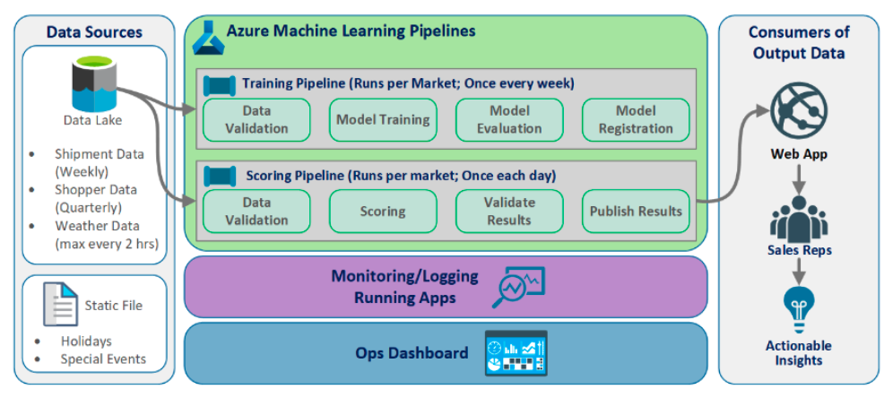

Azure Machine Learning Service
Azure Machine Learning Service: Combination of Azure cloud services and Python SDK.
Create environment -> Prepare data -> Build models -> Train models -> Test models -> Manage models -> Track experiments -> Deploy models
Azure ML Studio
- Web portal in Azure Machine Learning
- Low-code and no-code options for project authoring
- Authoring tools: Notebooks, AutoML and Designer.
- Set of SDKs and cloud services to scale, monitor, and deploy ML models.
Three ways to machine learning projects in studio: * Azure Machine Learning designer * Automated Machine Learning UI * Notebooks
按代码量排序： 1. Automated ML 里配置自动化模型 2. Designer 里创建pipeline，拖拉拽step，用 Execute Python Script 嵌入代码 (见 aml2: AML Designer) 3. Notebooks 里用 PythonScriptStep 创建pipeline (见 aml1: AML Pipelines ) 4. Notebooks 里纯代码创建模型 (见 aml3: AML Notebook)
Compute Target
Attached to your Azure Machine Learning Workspace. Can be used to run pipelines and host deployed models as real-time endpoints or pipeline endpoints.
- Azure Machine Learning Compute: Training
- Azure Kubernetes Service: Deployment
| Compute Target | Automated ML | AML Pipelines | AML Designer |
|---|---|---|---|
| Local Computer | Yes | ||
| AML compute cluster | Yes | Yes | Yes |
| AML compute instance | Yes (through SDK) | Yes | |
| Remote VM | Yes (SDK local mode only) | Yes | |
| Azure Databricks | Yes | Yes |
优势
- 支持开源算法：Scikit-learn, TensorFlow, CNTK, PyTorch
- Automated 数据处理，Automated 算法选择，Automated 超参数选择
- Pipeline：串联step（数据准备/模型训练测试/模型部署），rerunnning指定step，不同step不同执行环境，创建可复用模板
- 集成 VS Code
- 部署模型 in ONNX format
ONNX (Open Neural Network Exchange) 的本质只是一套开放的 ML 模型标准，模型文件存储的只是网络的拓扑结构和权重，ONNX 的目的在于提供一个跨框架的模型中间表达框架，用于模型转换和部署
Build, Train and Deploy a Model步骤：
- create Azure subscription -> resouce group -> workspace
- import data -> prepare and clean data
- train model -> test and tune model -> register model
- compute target -> scoring file -> environment config file -> inference config
- deploy model -> test model (web service)
Workspace
创建 Workspace： * Workspace name * Azure subscription ID * Resource group name * Location
每个Workspace配备： * Key Vault * Container Registry * Storage Account * Application Insights
Load Workspace
from azureml.core.workspace import Workspace
ws.write_config() # save workspace config file
ws = Workspace.from_config() # load an existing workspace
ws = Workspace.get(name="myworkspace", subscription_id='<subscription_id>', resource_group='myresourcegroup')
Build and Train a Model
Import Data
- AML Datasets (recommended): A reference to the data and its location together with a copy of its metadata
- Import Data Module: online data sources / data store / HTTP URL
Prepare and Clean Data
Transformation functions: * drop * dropna * rename * concat * transpose * replace * fillna * sum
Train Model
split data
from sklearn.model_selection import train_test_split
Automatic featurization 自动特征化:
- Generate more features – aka feature engineering 生成更多特征
- Impute missing values 插补缺少的值
- Transform – numeric to categorical 转换
- Encode – one-hot encoding and one-hot hash encoding 编码
- Drop features that have high cardinality or no variance 删除高基数或者无差异的特征
- Cluster distance 群集距离
- Word embeddings 单词嵌入，文档特征矢量
https://learn.microsoft.com/zh-cn/azure/machine-learning/how-to-configure-auto-features
Steps to use Automated ML: 1. Determine problem type：Classification,Regression,TimeSeriesforecasting 2. Decide between using Python SDK or the studio web experience 3. Determine the source and format of training data 4. Configure compute target for model training: Local computer, Azure ML Computes, Azure Databricks, remote VMs 5. Configure AutoML parameters 6. Submit the run 7. Examine the outcome
Save Model
Model 保存为 pickle 文件（.pkl） * Can be loaded later for predictions * Is the serialized version of the model. * Provides an efficient way to save model and transfer over the network. * Can be loaded and un-serialized using the load() method. * Can be used to load the model for further actions.
Register Model
Model registeration allows you to store and version the model. A registered model can be downloaded and deployed.
Compute Target: * AKS: Real-time High-Scale Production * AML Compute: Batch prediction from AML Pipelines * ACI: Quick testing * AZure IoT Edge: IoT * FPGA: Web
Deploy a Trained Model
Scoring File (.py)
two functions in score.py: * init() 加载模型 * run(input_data) 预测数据
# score.py
from sklearn.externals import joblib
from sklearn.linear_model import <algorithm_name> from azureml.core.model import Model
def init():
global model
model_path = Model.get_model_path ('<pkl_file_name>')
model = joblib.load(model_path)
def run(raw_data):
data = json.loads(raw_data)['data']
data = numpy.array(data)
result = model.predict(data)
return result.tolist()
Environment Configuration File (.yml)
- Defines the conda environment for the model. (conda-dependency file)
- Used to make sure all model dependencies are included in the container image.
from azureml.core.conda_dependencies import CondaDependencies
env1 = CondaDependencies.create(conda_packages=['scikit-learn'])
with open("<yml_file_name>","w") as f: f.write(env1.serialize_to_string())
inference configuration
describes how to set up the web-service containing your model.
from azureml.core.model import InferenceConfig
inference_config = InferenceConfig(runtime= "python", entry_script="score.py",
conda_file="<yml_file_name>")
Deploy to Compute Target
service = model.deploy( workspace=ws, name='<service_name>', deployment_config=aciconfig, models=[model],
inference_config = inference_config )
Consume Deployed Model
A web service is created if image is deployed to ACI/AKS/FPGA
Deploying as web service creates a REST API. Can use HTTP to send requests and receive responses
import json
test_input = json.dumps({'data':[[i1, i2, ...]]})
prediction = service.run(input_data = test_input) Print(prediction)
Monitor
Azure monitor is a full stack monitoring service in Azure.
- Metrics：可以添加 Model Deploy Failed 到 dashboard
- Alert：Alert rule: Model Deploy Failed 发送邮件到选择的 action group
AML Pipelines
1.Install AML SDK -> create workspace
2.Set up data store
workspaceblobstore (default) / workspacefilestore
datastore = ws.get_default_datastore # SDK v1
default_store = ml_client.datastores.get_default() # SDK v2
3.Upload data to storage
4.Create Data Reference object
from azureml.data.data_reference import DataReference
stored_data = DataReference(
datastore = MyDefault_Store,
data_reference_name = "FlightDelay_dataset", path_on_datastore = ("FlightDelay/part-00000")
)
5.run configuration (pip package dependencies / SDK version)
6.Create PipelineData object
from azureml.pipeline.core import PipelineData
normalized_data = PipelineData(
name = "normalized_flight_delay_data",
data_store = default_store
)
7.Construct pipeline steps
need to define: * input / output * compute target / run configuration * other required parameters
DataCleaningStep = PythonScriptStep(
name="Clean Data",
script_name="cleanse_datasets.py",
arguments=[<script_inputs>],
inputs=[<DataReference_or_PipelineData>],
outputs=[cleansed_data],
compute_target=MyAml_Compute_Target, runconfig=MyAml_Run_Config, source_directory=<path_to_Python_script>,
allow_reuse=True
)
8.Build pipeline
from azureml.pipeline.core import Pipeline
PPLines_Steps = [CleaningStep, NormalizingStep] # 定义step顺序
MyPipeline = Pipeline(workspace = ws, steps = PPLines_Steps)
9.Submit pipeline
from azureml.core import Experiment
PPLine_Run = Experiment(ws, "exp_name").submit(MyPipeline,regenerate_outputs = True)
10.View progress
from azureml.widgets import RunDetails
RunDetails(PPLine_Run).show()
PPLine_Run.wait_for_completion()
# get step output
def fetch_df(step, output_name):
output_data = step.get_output_data(output_name)
download_path = './outputs/' + output_name
# download to local
output_data.download(download_path, overwrite=True)
df_path = get_download_path(download_path, output_name) + '/processed.parquet'
return pd.read_parquet(df_path)
y_test = fetch_df(split_step, output_split_test.name)[['cost']]
MLOps
Train Model -> Package Model -> Validate Model -> Deploy Model -> Monitor Model -> Retrain Model
模型衰退(Model Decay) 历史的模型效果并不能保证未来的模型效果
7 Principles of MLOps * Version control code, data, and experimentation outputs * Use multiple environment * Manage infrastructure and configurations-as-code * Track and manage machine learning experiments * Test code, validate data integrity, model quality * Machine learning continuous integration and delivery * Monitor services, models, and data
MLOPs solution Architecture 
Azure Event Grid
AML events:
- Run completion
- Model registration
- Model deployment
- Data drift detection
- Run status change
Use cases:
- Send emails on run completion
- Use an azure function after a model is registered
- Trigger an ML pipeline when drift is detected